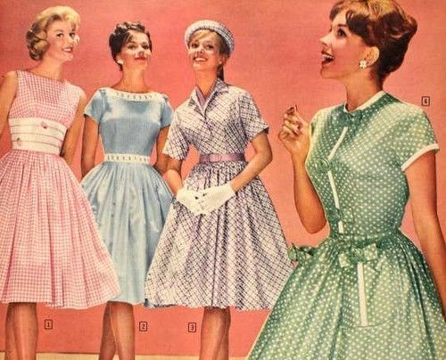
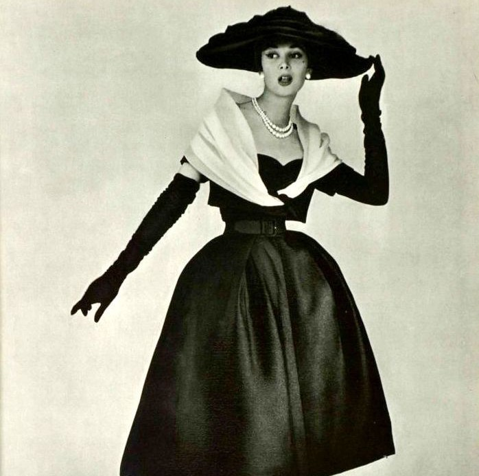
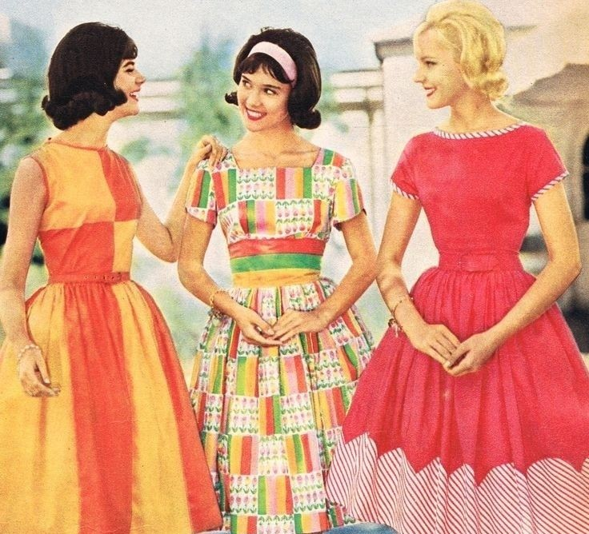
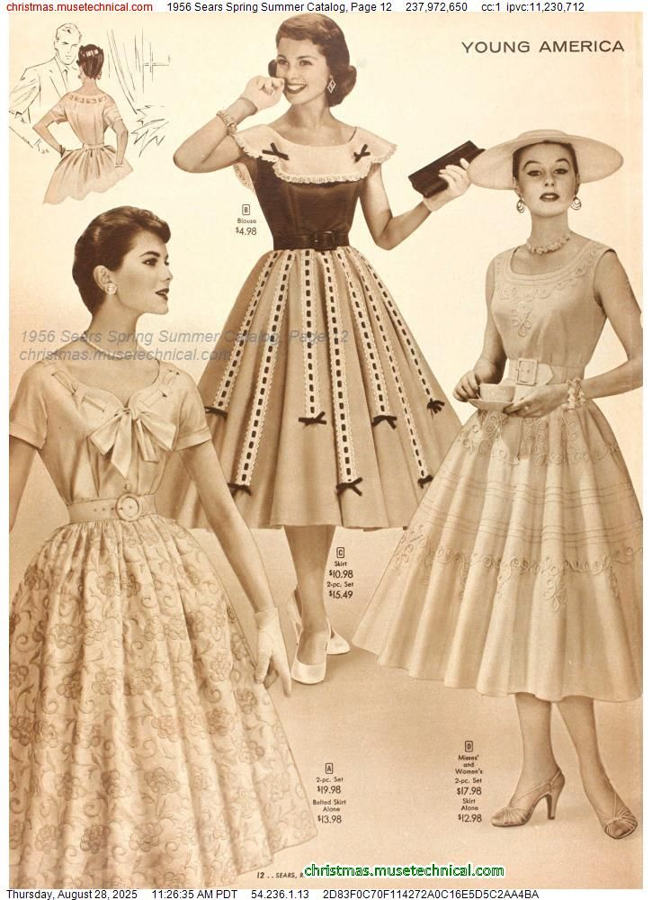
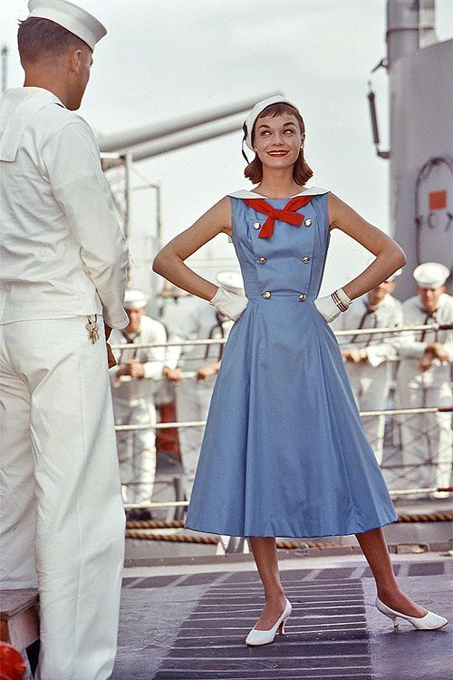
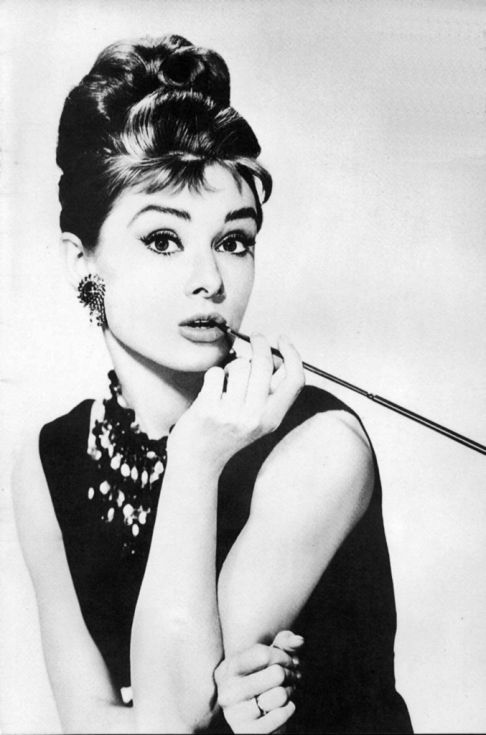
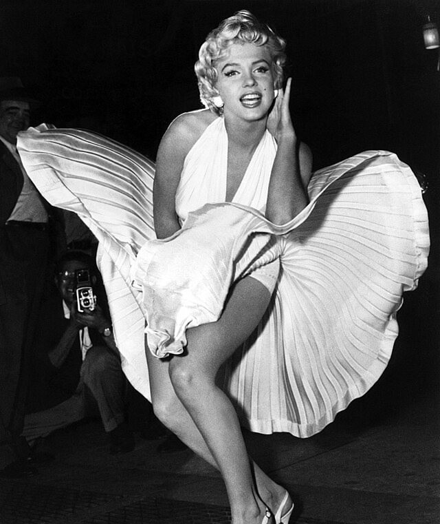
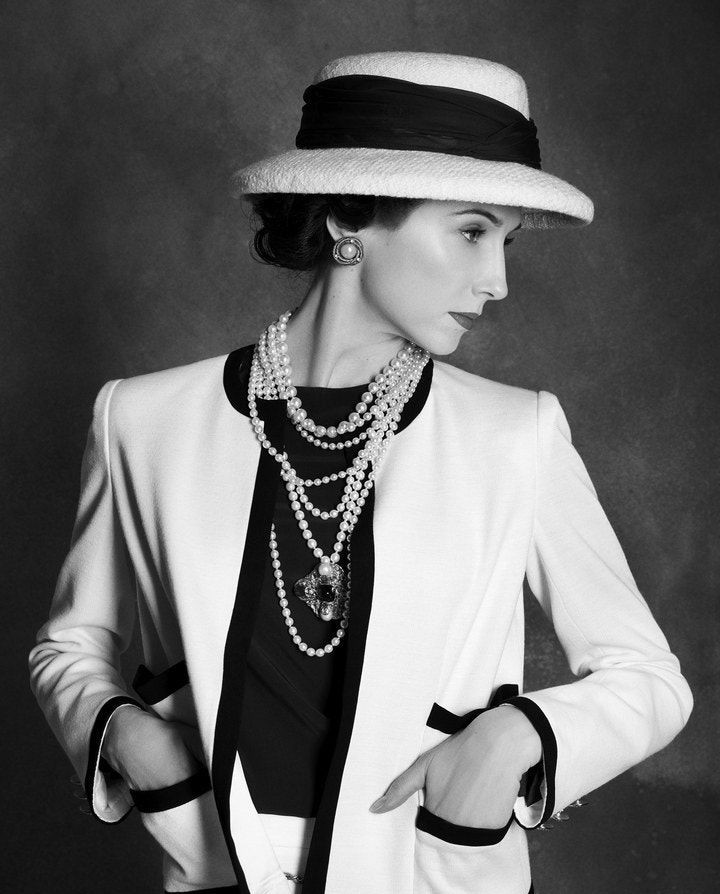
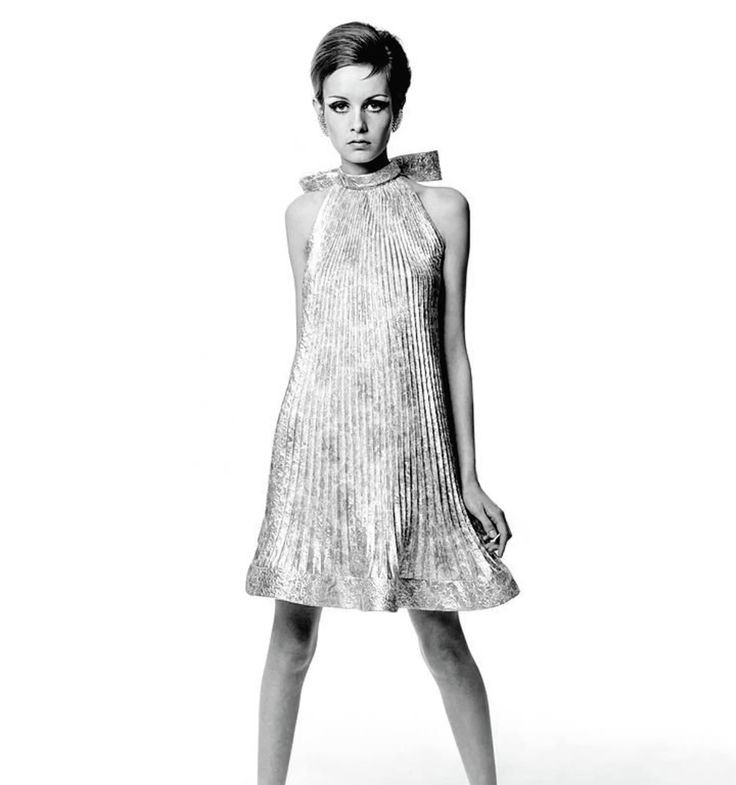

Vintage fashion is more than just a nostalgic aesthetic — it’s a rich timeline of cultural shifts, artistic revolutions, and evolving style. As fashion lovers rediscover the beauty of second-hand pieces, it’s important to understand where it all began and how vintage has become the global movement it is today.


Vintage clothing is clothing that originates from a previous era. The term vintage clothing can also be applied in reference to second-hand retail outlets, e.g. in "vintage clothing store". While the concept originated during World War I as a response to textile shortages,[1] vintage dressing encompasses choosing accessories, mixing vintage garments with new, as well as creating an ensemble of various styles and periods. Vintage clothes typically sell at low prices for high-end name brands.
During World War I, the United States launched a conservation campaign with slogans such as "Make economy fashionable lest it become obligatory." This led to a rise in reusing classic garments.
"Vintage" is a colloquialism commonly used to refer to all old styles of clothing. A generally accepted industry standard is that items made between 30 and 100 years ago are considered "vintage" if they clearly reflect the styles and trends of the era they represent. These clothing items come with a sense of history attached to them, which is one of the reasons they are valued by vintage enthusiasts.[3] This sense of history allows consumers to express sentimental nostalgia for fashions of past eras and for aspects not common with modern items like craftsmanship.[4][5] Vintage items are considered different than antique, which is used to refer to items 100 years old or more. Retro, short for retrospective, or "vintage style," usually refers to clothing that imitates the style of a previous era. Reproduction, or repro, clothing is a newly made copy of an older garment.



